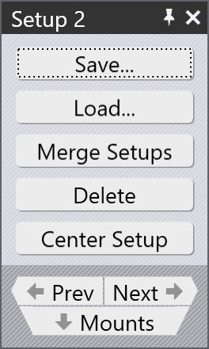

曲げ加工設定の編集

曲げ加工マウント編集の際、ツール マウント パネルのSetupナビゲーション ボタンをクリックして、曲げ加工セットアップ全体を編集できます。曲げ加工セットアップパネルが横に表示され、ここでいくつかの操作が可能です。
-
セットアップを曲げ加工セットアップファイル（拡張子が .bsetup のファイル）にSave できます。後でLoad… オプションを使用して、 このセットアップをローディングし別のパーツに使用します。これは、複数のパーツに同じ設定を使用するための簡単な手動の方法です。
-
パーツに複数のセットアップがある場合、Merge Setupsボタンが表示されます。そして、マシンすべての[1]。
-
このセットアップのステーションがマシンの使用可能なテーブル領域の中央に配置されていない場合、Center Setupボタンが表示されます。
-
Prev とNextボタンを使用して、このパーツのさまざまな設定を切り替えることができます (複数の設定がある場合)。
-
Mounts ナビゲーションボタンをクリックして、1 レベル下に移動して、このセットアップの最初のツール マウントを編集します (ツール マウント パネルのSetupナビゲーション ボタンの反対です)。
1. に十分なスペースがあれば、これら複数の設定を1つに_統合_します。セットアップで高さの異なるツールを使用すると、パンチとダイの間で衝突が発生しやすくなり、それが曲げナビゲーターで報告されます。